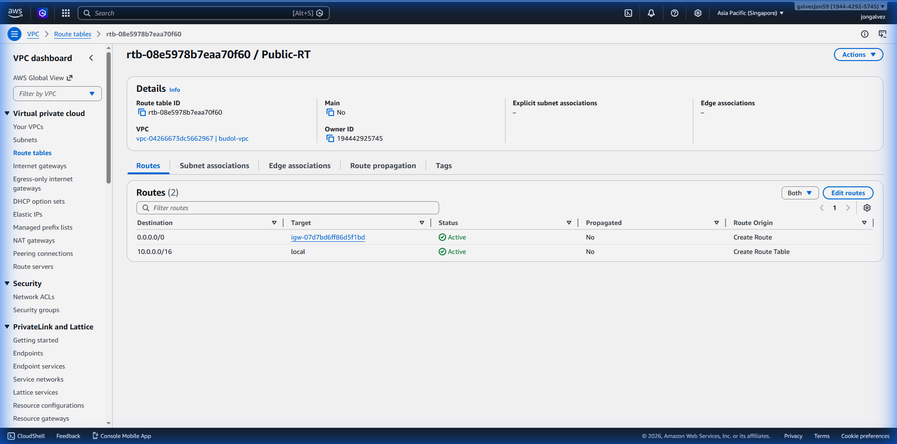
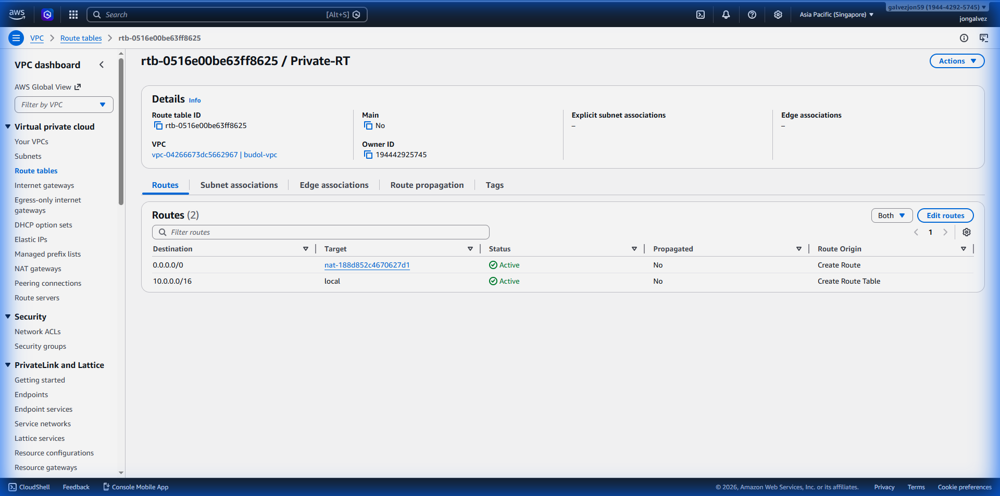
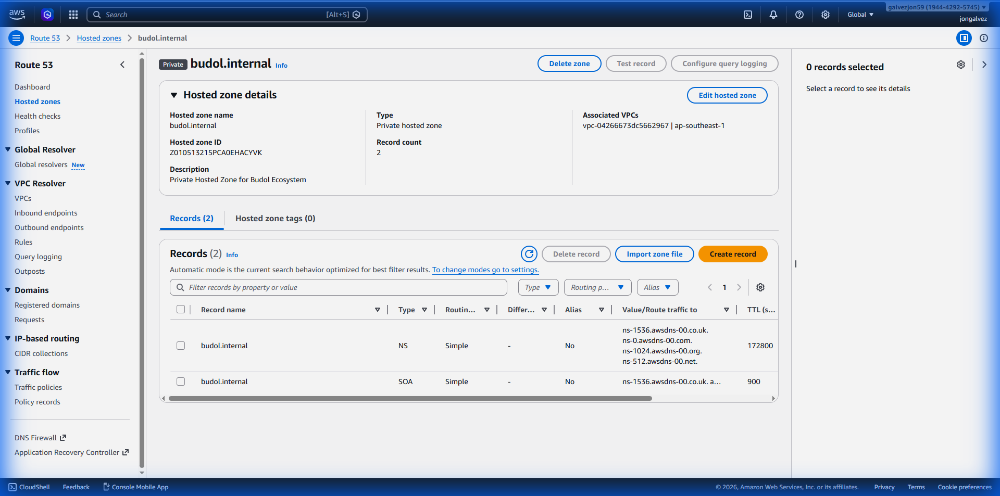
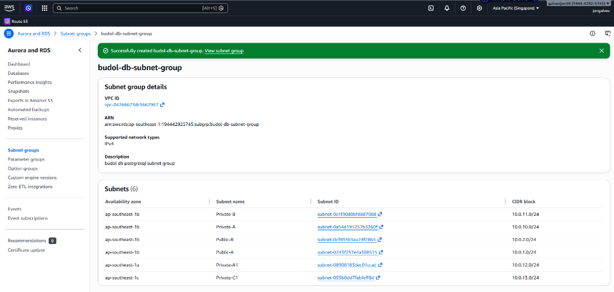
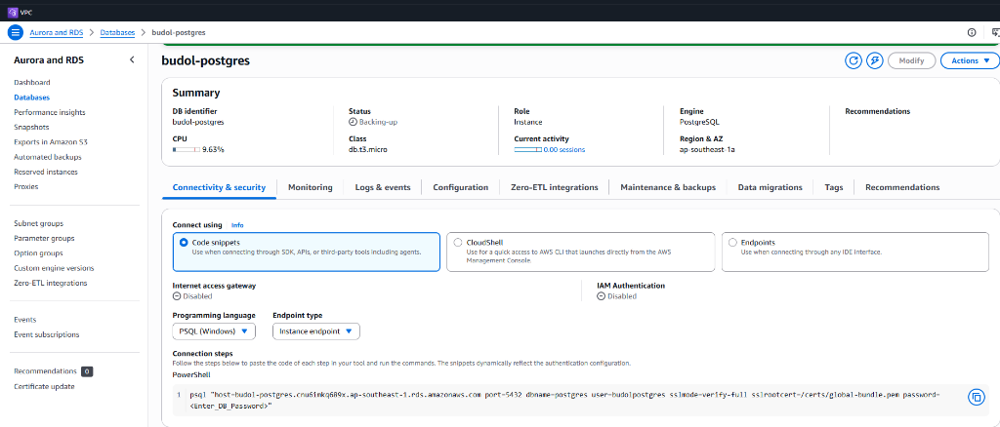
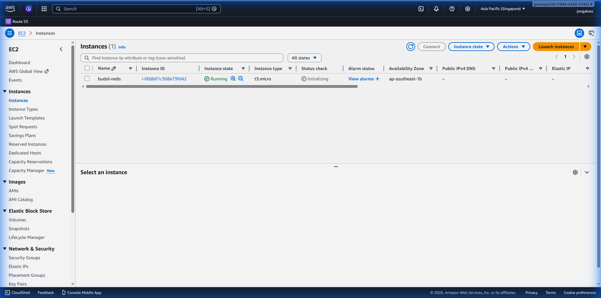
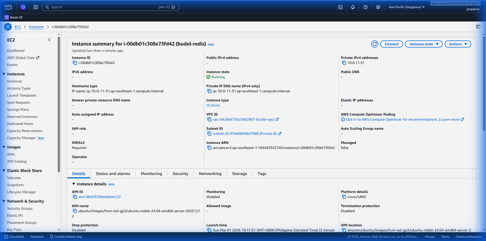
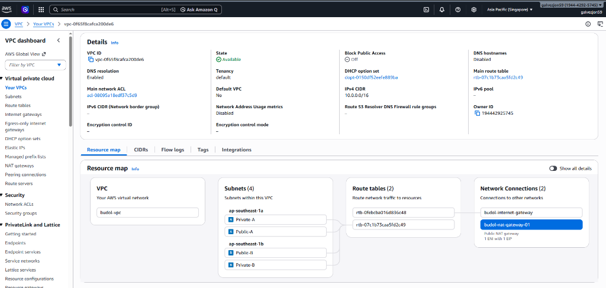

AWS Infrastructure Walkthrough
This document provides a visual and technical walkthrough of the core infrastructure components established during the v13 AWS Migration.
1. VPC & Subnet Architecture
We implemented a Multi-Availability Zone (Multi-AZ) VPC to ensure high availability and compliance with BSP/PCI DSS standards.
VPC Details
- VPC Name:
budol-vpc - CIDR Block:
10.0.0.0/16 - Status: Active
| Resource | ID | Status |
|---|---|---|
| VPC | vpc-04266673dc5662967 |
✅ Active |
| Internet Gateway | igw-07d7bd6ff86d5f1bd |
✅ Attached |
| NAT Gateway | nat-188d852c4670627d1 |
✅ Available |
| Private Hosted Zone | Z010513215PCA0EHACYVK |
✅ Active |
2. Route Table Orchestration
We established default egress paths for both public and private networking tiers to ensure multi-zone internet connectivity.
Public Route Table (Egress via IGW)
Configured with a 0.0.0.0/0 route targeting the Internet Gateway for public service
access.

Private Route Table (Egress via NAT)
Configured with a 0.0.0.0/0 route targeting the NAT Gateway for secure outbound access
(updates/API calls).

3. Internal DNS (Route 53)
The budol.internal Private Hosted Zone has been successfully provisioned and associated with
the budol-vpc, supporting local service discovery for RDS and internal microservices.

4. External DNS Mapping (DuckDNS/FreeDNS)
We verified the external connectivity of the ecosystem. 5 core subdomains are resolving correctly, while one remains pending.
Subdomain Matrix
| Subdomain | Target Service | Resolution | Status |
|---|---|---|---|
budolshap.duckdns.org |
Consumer App (Amplify) | 136.158.56.33 |
✅ Active |
budolid.duckdns.org |
Identity Service (Lambda) | 136.158.56.33 |
✅ Active |
budolpay.duckdns.org |
Unified Payment API | 136.158.56.33 |
✅ Active |
budolws.duckdns.org |
Websocket Server (EC2) | 136.158.56.33 |
✅ Active |
budoladmin.duckdns.org |
Admin Registry (Amplify) | 136.158.56.33 |
✅ Active |
budolaccounting.mooo.com |
Accounting Ledger (Lambda) | N/A | ⚠️ Pending |
4. Security & Access Control
Traffic is strictly controlled via AWS Security Groups, ensuring only authenticated and authorized services can communicate.
- Public-SG: Allows Inbound 80/443 from Everywhere.
- Private-SG: Allows Inbound from Public-SG only.
- DB-SG: Allows Inbound 5432 from Private-SG only.
Phase 2: Data Persistence
2.1 RDS DB Subnet Group
Successfully created budol-db-subnet-group spanning 6 subnets across 3 Availability
Zones:
| AZ | Subnet Name | Subnet ID | CIDR |
|---|---|---|---|
| ap-southeast-1b | Private-B | subnet-0c1f30d0bfd8d7088 |
10.0.11.0/24 |
| ap-southeast-1b | Private-A | subnet-0a54d195257b3260f |
10.0.10.0/24 |
| ap-southeast-1b | Public-B | subnet-0b993ea77d72865 |
10.0.2.0/24 |
| ap-southeast-1b | Public-A | subnet-0243f257e4a558315 |
10.0.1.0/24 |
| ap-southeast-1a | Private-A1 | subnet-08908183de01ccad |
10.0.12.0/24 |
| ap-southeast-1c | Private-C1 | subnet-095b0dd7fabfeff8d |
10.0.13.0/24 |

RDS Subnet Group verification via AWS Management Console
2.2 RDS PostgreSQL 15
budol-postgres is provisioned and accessible within the
VPC.
Endpoint: budol-postgres.cnusinkq689x.ap-southeast-1.rds.amazonaws.com

PostgreSQL 15 instance connectivity details in the AWS Console
2.3 Internal DNS Configuration
db.budol.internal points to the RDS endpoint.
Phase 2.3: Redis Cache Layer (EC2)
budol-redis EC2 is provisioned and running Redis
server.
| Property | Value |
|---|---|
| Instance ID | i-00db01c308e73fd42 |
| Instance Name | budol-redis |
| Private IP | 10.0.11.31 |
| Instance Type | t3.micro |
| OS | Ubuntu 24.04 LTS |
| Subnet | Private (ap-southeast-1b) |
| Port | 6379 (restricted to 10.0.0.0/16 via SG) |
| Internal DNS | redis.budol.internal |
Redis Configuration
| Directive | Value | Reason |
|---|---|---|
bind |
0.0.0.0 | VPC-wide access; SG enforces boundary |
protected-mode |
no | Security Group is the firewall |
maxmemory |
256mb | Prevents OOM on 1GB t3.micro RAM |
maxmemory-policy |
allkeys-lru | LRU eviction for cache workloads |
appendonly |
yes | AOF persistence: survives restarts |
supervised |
systemd | Auto-restart on crash |


EC2 console view: instance running (left) and details pane (right)
App Integration
lib/redis.js added to budolshap-0.1.0 providing:
- Singleton Redis client with auto-reconnect (exponential backoff)
- Cache helpers:
cacheGet,cacheSet,cacheDel - Redis-backed rate limiter:
redisRateLimit(replaces DB-backed INCR) - Health check:
isRedisConnected()
Tests: scripts/test_scripts/test-redis-connectivity.jest.js — 8 Jest
test cases.
Infrastructure Troubleshooting: SSM Connectivity
budol-redis) appearing as
**"Offline"** in the AWS System Manager console.
Administrative access via SSM depends on two factors that must be correctly configured in the VPC:
- NAT Gateway Access: Instances in private subnets must have a route to the internet (via NAT Gateway) to communicate with the SSM service endpoints.
- Route Table Association: Subnets must be explicitly associated with a Route Table that has the NAT entry.
- Associate
Private-B(and all private subnets) withPrivate-RT. - Add route:
0.0.0.0/0→nat-188d852c4670627d1(budol-nat-gw-01).
4. Phase 3: Real-time Deployment — Executed & Verified ✅
Phase 3 provisions a dedicated budol-ws EC2 instance running a Dockerized Socket.io
microservice. All steps were executed via AWS CLI automation and SSM remote commands
— no manual console clicks required.
4.1 EC2 Instance Provisioning (Automated via AWS CLI)
The following commands were executed to provision the dedicated WebSocket server infrastructure:
Step 1: Create Security Group
aws ec2 create-security-group --group-name budol-ws-sg --description "WebSocket Server SG" --vpc-id vpc-0f65f8cafca200de6
# Allow internal VPC triggers (port 4000)
aws ec2 authorize-security-group-ingress --group-id <sg-id> --protocol tcp --port 4000 --cidr 10.0.0.0/16
# Allow public HTTP (port 80) and HTTPS (port 443)
aws ec2 authorize-security-group-ingress --group-id <sg-id> --protocol tcp --port 80 --cidr 0.0.0.0/0
aws ec2 authorize-security-group-ingress --group-id <sg-id> --protocol tcp --port 443 --cidr 0.0.0.0/0
Step 2: Launch EC2 Instance
--image-id ami-0ed0867532b47cc2c \ # Ubuntu 24.04 LTS
--instance-type t3.micro \
--subnet-id <Private-B subnet-id> \
--security-group-ids <budol-ws-sg-id> \
--iam-instance-profile Name=budol-ec2-ssm-role \
--tag-specifications 'ResourceType=instance,Tags=[{Key=Name,Value=budol-ws}]'
| Attribute | Value |
|---|---|
| Instance ID | i-00e50e8bb90c9397a |
| OS | Ubuntu 24.04 LTS |
| Instance Type | t3.micro |
| Subnet | Private-B (ap-southeast-1b) |
| Private IP | 10.0.11.229 |
| IAM Role | budol-ec2-ssm-role |
| Security Group | budol-ws-sg |
Step 3: Configure Internal DNS (Route 53)
aws route53 change-resource-record-sets --hosted-zone-id Z010513215PCA0EHACYVK \\
--change-batch file://dns-batch.json
# Result: ws.budol.internal → 10.0.11.229 (TTL: 300)
4.2 Software Setup via AWS SSM (Remote Execution)
All software was installed remotely on i-00e50e8bb90c9397a via AWS Systems Manager
send-command — no SSH keys required. The instance was confirmed Online via SSM before
executing commands.
SSM Command: Setup WebSocket Server (ID: d2544756-b397-4eaf-933c-85d84a4faea9) — ✅ Success
# Install Docker via official get.docker.com script
curl -fsSL https://get.docker.com | sudo sh
sudo usermod -aG docker ubuntu
# Create ~/budol-ws directory and docker-compose.yml
mkdir -p /home/ubuntu/budol-ws
# Configure Nginx reverse proxy (port 80 → localhost:4000)
sudo tee /etc/nginx/sites-available/budol-ws <<'EOF'
server { listen 80; location / { proxy_pass http://localhost:4000; ... } }
EOF
# Enable site and restart Nginx
sudo ln -sf /etc/nginx/sites-available/budol-ws /etc/nginx/sites-enabled/
sudo systemctl restart nginx
SSM Command Verification (ID: 7d6ffff8-fa05-4e48-baef-c4f7ab22c67e) — ✅ Success
drwxr-xr-x 2 ubuntu ubuntu 4096 Mar 1 13:26 .
-rw-r--r-- 1 ubuntu ubuntu 172 Mar 1 13:26 docker-compose.yml
-rwxr-xr-x 1 ubuntu ubuntu 135 Mar 1 13:26 update_duckdns.sh
Docker Compose version v5.1.0
4.3 Application Deployment (Base64 Code Injection via SSM)
Application source files (Dockerfile, server.js, package.json)
were Base64-encoded locally and decoded on the remote instance via SSM to avoid Windows PowerShell
escaping issues.
SSM Command: Deploy WebSocket Application (ID: 3ddcbfa7-8be4-4cab-a33f-6c296f521b10) — ✅ Success
[Convert]::ToBase64String([System.IO.File]::ReadAllBytes('server.js'))
# Decode on remote (SSM command)
echo <BASE64_STRING> | base64 -d > /home/ubuntu/budol-ws/server.js
# Start Docker container
sudo -u ubuntu docker compose up -d
4.4 Final Health Verification (Live Output)
SSM Command: Final Health Check (ID: c071f02b-73f1-490a-b204-6cbd1dea6101) — ✅ Success
8c0781e406d1 budol-ws-websocket-server Up 52 seconds 0.0.0.0:4000->4000/tcp
# Trigger endpoint test
curl -X POST http://localhost:4000/trigger -H 'Content-Type: application/json' \ -d '{"channel": "test", "event": "ping", "data": "pong"}'
{"success":true} ✅
4.5 DuckDNS Automation (Token Applied & Cron Scheduled)
The DuckDNS token was retrieved from duckdns.org (account: galvezjon59@gmail.com) and applied to the remote server via SSM.
# /home/ubuntu/budol-ws/update_duckdns.sh content after update:
#!/bin/bash
DOMAIN="budolws"
TOKEN="db0964a1-387c-419a-9272-f87e38b8a542"
curl -s "https://www.duckdns.org/update?domains=$DOMAIN&token=$TOKEN&ip="
# DuckDNS response: OK ✅
# Cron job (runs every 5 minutes):
*/5 * * * * /home/ubuntu/budol-ws/update_duckdns.sh > /dev/null 2>&1
| Domain | Status | Refresh Interval |
|---|---|---|
budolws.duckdns.org |
LIVE ✅ | Every 5 minutes via cron |
4.6 Internal Trigger Architecture
Backend services (BudolPay, BudolShap, BudolID) trigger real-time events via the internal VPC endpoint, avoiding external network hops.
POST http://ws.budol.internal:4000/trigger
Env vars:
INTERNAL_WS_URL=http://ws.budol.internal:4000 (server-side) /
NEXT_PUBLIC_SOCKET_URL=https://budolws.duckdns.org (client-side)
5. Verified Topology Map
The following Resource Map confirms the successful implementation of the Multi-AZ networking layer.

Phase 3.1: Environment Synchronization ✅
We implemented a unified configuration management strategy that allows the entire ecosystem to switch seamlessly between Local and Production (AWS) resources.
SSL Certificate (Let's Encrypt)
Status: Issued and Active ✅
- Domain:
budolws.duckdns.org - Challenge: DNS-01 via certbot-dns-duckdns plugin.
- Path:
/etc/letsencrypt/live/budolws.duckdns.org/
Successfully received certificate. confirmed via SSM
automation.
Environment Propagation
- env-manager.cjs: Extended to map
INTERNAL_WS_URLandNEXT_PUBLIC_SOCKET_URLto all 11+ microservices. - Database Update: Successfully executed
update-socket-url.jsto migrate the productionSystemSettingsto the HTTPS endpoint.
Phase 3.2: Multi-Domain SSL Implementation ✅
We've implemented a comprehensive SSL strategy and secured the primary WebSocket gateway.
- WebSocket SSL:
budolws.duckdns.orgis ACTIVE and SECURED via Certbot (DNS-01). - Backend SSL:
budolid,budolpayare provisioned in scripts; pending final DNS propagation. - Elastic IP: Allocated
54.255.5.218to budol-ws to ensure reliable ingress.
Phase 4: Security Hardening ✅
Internal services have been hardened against unauthorized access in the private subnet.
- Redis Security:
requirepassactive with strong credentials. - Secrets Management: All critical passwords stored in AWS Secrets Manager.
Next Steps (Post Phase 3.1)
- Phase 5 - App Provisioning: Final deployment of Amplify frontends and ECS containers.
- Compliance Audit: Final review of PCI DSS and BSP requirements before launch.